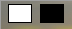

Übersicht
ImageResize 3.3 ist eine App zur Größenänderung von JPEG- und PNG-Bildern. Es ist für die Erzeugung von Web-Gallerien gedacht und kann viele Bilder auf einmal verarbeiten.
Inhalt
ÜbersichtListe der Bilder
Zielverzeichnis
Zielgrößen
Qualität
Umbenennen und mischen
Wasserzeichen
Boost
Speichern und Öffnen
Kommandozeilen-Parameter
Wasserzeichen-Editor
Fähigkeiten
- Resampling (Verkleinerung) von Listen mit Bilddateien
- Resampling jedes Bildes in mehrere Größen
- Nutzt Lanczos-Filterung für gute Ergebnisse
- Optionales Wasserzeichen
- Unterstützt JPEG- und PNG-Formate
- Kontrolle der Kompressionsqualität
- GUI-, CLI- und API-Schnittstelle verfügbar
- Systematische Dateiumbenennung
- Optionales zufälliges Mischen der Liste
Unfähigkeiten
- Bildverzerrung
- Formatkonvertierung (JPEG bleibt JPEG und PNG bleibt PNG)
- Vorschau
- Bewahren von Meta-Informationen (EXIF)
Übersicht
Das Programm benötigt mindestens die folgenden 3 Angaben:
- Eine Liste von Bilddateien oder ein Quellverzeichnis mit Dateifilter

- Ein Zielverzeichnis

- Eine oder mehrere Zielgrößen

Drücken Sie am Ende  um das Resampling zu starten.
um das Resampling zu starten.
Liste der Bilddateien
ImageResize kann mehrere Bilddateien resampeln. Die Liste besteht aus Pfad/Dateiname und kann
- manuell eingegeben werden
- im Auswahldialog ausgewählt werden
 mit <STRG> und <UMSCHALT>
mit <STRG> und <UMSCHALT> - durch Ziehen von Bilddateien aus dem Windows-Explorer ergänzt
- durch Angabe eines Quellverzeichnisses mit Dateifilter angegeben werden
Die Liste kann JPEG- und PNG-Dateien enthalten. Die Dateinamen können beibehalten oder umbenannt werden. Relative Pfade beziehen sich auf das Arbeitsverzeichnis des Programmes.
InhaltZielordner
Ein Zielordner muss angegeben werden. Sie können ihn direkt eintippen
oder mit der Schaltfläche auswählen.
Wenn mehrere Zielgrößen angegeben werden, können entweder mit Umbenennen von Dateien Zielkonflikte vermieden werden, oder indem der Zielordner den Platzhalter %SIZE% enthält.
InhaltGrößen
Eine Größe in Pixeln bezieht sich auf die längere Seite eines Bildes. Gewöhnlich ist die Größe der Originaldatei größer als die Zielgrößen.
ImageResize kann mehrere Größen für jedes Bild erzeugen. Geben Sie eine Liste von Größen ein,
die mit dem Komma getrennt sind, oder wählen Sie Größen aus den Vorschlägen aus.

Sie können alle Größen angeben, die größer als 0 sind. Die Vorschläge unter der Liste sind unverbindlich.
Sie können die Liste ändern, indem Sie die Löschen-Schaltfläche  klicken. Um eine einzelne Größe zu löschen, markieren Sie zuvor die Größe, oder sie klicken einen
bereits gewählten Vorschlag erneut.
klicken. Um eine einzelne Größe zu löschen, markieren Sie zuvor die Größe, oder sie klicken einen
bereits gewählten Vorschlag erneut.
Qualität
Sie können den Kompressionsgrad für JPEG- und für PNG-Formate steuern,
Eine höhere Qualität resultiert in größeren Dateien. Bei JPEG ist 75 bis 95 Prozent
eine gute Wahl.
Bei PNG-Dateien sind 4 Kompressionsgrade möglich:
- none - keine Kompression
- fastest - schnellste (geringe) Kompression
- default - normale Kompression
- maximum - maximale Kompression (langsamer)
 Inhalt
Inhalt
Umbenennen und Mischen
Umbenennen der Zieldateien wird interessant, wenn Sie nicht für jede Größe einen eigenen Ordner erzeugen möchten, sondern alle Dateien in einen Ordner packen möchten. Dann müssen die Zieldateien umbenannt werden, am besten, indem sie die Zielgrößen zur Unterscheidung erhalten.
Checken Sie Verwenden und wählen Sie eine der möglichen Strategien:
Strategie "Einfach"
Die einfache Dateinamenvorlage erzeugt Namen wie diesen: img085.jpg. Die Datei-Nummerierung beginnt bei 1 und enthält nicht die Größe (in Pixeln). Dann ist es erforderlich für jede Größe einen eigenen Folder zu erzeugen. Dazu fügen Sie in die Vorlage des Zielverzeichnisnamens den Platzhalter %SIZE% ein.
Die Dateinames-Vorlage im einfachen Falle ist img%INDEX:1,3%.%FILEEXT%. Der INDEX ist die 0-basierte laufende Nummer der Quelldatei in der Liste. Die Zahlen 1 und 3 hinter dem Schlüsselwort INDEX bedeuten, dass der Index bei 1 beginnt und 3 Ziffern mit führenden Nullen enthalten wird.
Strategie "Fortgeschritten"
Die Dateinamen-Vorlage in diesem Falle ist z.B. img%INDEX:1,3%_%SIZE%.%FILEEXT%, um alle Dateien im selben Verzeichnis zu erzeugen. Sie erzeugt einen Dateinamen wie img085_1920.jpg. Der Dateinamenskonflikt ist vermieden durch Verwendung des %SIZE%-Platzhalters.
Strategie "Benutzer"
Um das Programm einen geeigneten Dateinamen erzeugen zu lassen, können Sie hier eine eigene Vorlage angeben. Die Vorlage enthält Platzhalter für spezielle Werte, die wärend der Verarbeitung erzeugt und eingefügt werden.
Beispiele für gültige Vorlagen im Falle, wo die resultierenden Dateinamen für verschiedene Größen im gemeinsamen Verzeichnis keinen Konflikt erzeugen, könnten so aussehen:
img%INDEX:1,3%_%SIZE%.%FILEEXT%
%FILENAME%_%SIZE%.%FILEEXT%
Verfügbare Platzhalter
| %FILENAME% | Dies ist der originale Dateiname, ohne die Erweiterung. |
| %FILEEXT% | Die Erweiterung des Originalnamens ohne den Punkt Anmerkung: Sie können das Format der Zieldatei nicht ändern, indem Sie die Erweiterung ändern. Dies könnte Bildbetrachter verwirren. |
| %INDEX:N,D% |
Der 0-basierte Index (laufende Nummer) der Datei in der Liste.
N ist ein Offset (Versatz). Normalerweise beginnen Listen
mit der Nummer 1, aber durch Angabe eines Versatzes können Sie vorhandene
Listen erweitern.s |
| %SIZE% | Die Zielgröße in Pixeln der aktuellen Datei |
Mischen
Mischen bedeutet, dass die Reihenfolge der Zieldateien zufällig ist. ImageResize wird dazu die Liste der Quelldateien vor der Verarbeitung mischen.
Der Parameter Saat kontrolliert die zufällige Abfolge. Eine Saat von 0 wird jedesmal, wenn die Verarbeitung gestartet wird eine eine andere Abfolge erzeugen. Jeder andere aber konstante Wert wird die die Abfolge in der selben Art mischen, solange die Bildliste sich nicht ändert.
Wasserzeichen
Ein Wasserzeichen ist ein halbdurchlässiges kleines Bild, dass z.B. ein Copyright dem Zielbild zufügt. Das Bild muss im PNG-Format vorliegen und kann einen Alpha-Channel (Transparenz) haben. Wenn das Bild gedruckt wird, kann eine zusätzliche Transparenz angegeben werden. 20 bis 30 Prozent ist gut für eine schwach sichtbare Erscheinung, ab 50 Prozent wird das Wasserbild deutlich sichtbar.
Verwenden
Hake diese Option ab, um das Wasserbild zu ermöglichen.
Dateiname
Gib einen Dateinamen einer PNG-Datei an, deren Bild in jedes Zielbild hineinskaliert wird.
Normalerweise genügt es für alle Zielgrößen eine gemeinsame Datei anzugeben, weil die Größe für jedes Bild angepasst wird. Daher ist es ok ein Wasserzeichenbild mit hoher Auflösung einmalig für alle zu erzeugen.
Es gibt jedoch einen Weg, für jede Zielgröße ein anderes Wasserbild zu verwenden. Geben Sie dazu im Namen der Wasserbilddatei den Platzhalter %SIZE% an. Sie müssen dann für jede Größe eine entsprechende Wasserbilddatei vorbereitet haben.
Sie können eine Wasserbilddatei mit jedem Programm erzeugen, das das PNG-Format unterstützt. Ein aar Vorschläge sind:
- Inkscape - ein freier Vektorgraphik-Editor
- Gimp - ein freies Rastergraphikprogramm
- Greenfish Icon Editor - ein graphischer Rasterbild-Editor
- mit dem eingebauten Wasserzeichen-Editor
Sie können dabei Transparenz verwenden, aber beachten Sie, dass ImageResize zusätzlich eine Transparenz darüberlegen kann.
Ein Glüheffekt (Verwischen) um die Schrift des Wasserbildes verbessert den Kontrast auf
verschiedenen Hintergründen.
Transparenz
Eine Transparenz von 0 Prozent lässt das Wasserbild verschwinden, 100 Prozent macht es voll deckend. 40 Prozent sind eine gute Wahl.
| 10% |  |
20% |  |
| 30% | 40% |  | |
| 50% |  |
60% |  |
| 70% | 80% |  | |
| 90% |  |
100% |  |
Horizontale Position
Die Position wird in Prozent des verfügbaren Raumes angegeben und von links oben gezählt.
0 Prozent ist linksbündig
50 Prozent ist mittig
100 Prozent ist rechtsbündig
Vertikale Position
0 Prozent ist ganz oben
50 Prozent ist vertikal zentriert
100 Prozent in ganz unten
Boost
Threads
ImageResize kann durch Multi-Threading die Rechenpower des Systems besser nutzen.
Single bedeutet das nur ein Kern genutzt wird. Sie können bis zur Gesamtzahl der
verfügbaren Kerne gehen (=Maximum). Dies kann die Verarbeitungsgeschwindigkeit verdoppeln.
In Systemen mit Hyperthreading ist die Zahl der virtuellen Kerne höher als die der physischen. Wenn Sie 12 Kerne haben, von denen nur 6 physisch sind, bewirkt die Nutzung von 12 Threads gegenüber 6 Threads nur eine Erhöhung der Rechengeschwindigkeit um etwa 8 Prozent.
Anhalten bei Fehlern
Diese Options signalisiert den Threads ein Beenden sobald es möglich ist. Das kann bei der Nutzung mehrerer Kerne etwas verzögert auftreten.
InhaltSpeichern und Öffnen von .irs Files
.irs-Dateien sind einfache textbasierte INI-Dateien. Sie enthalten alle Einstellungen, die Sie im Dialog sehen, außer den Boost-Einstellungen.
Weil ImageResize außerdem die letzten Einstellungen in einer veborgenen Datei sichert, fragt es nicht, ob nach Änderungen der Einstellungen gespeichert werden soll.
InhaltKommandozeilen-Parameter
filename.irs
Sie können ImageResize eine .irs-Datei beim Start laden lassen, indem Sie den Dateinamen als Kommandozeilen-Parameter übergeben. Dadurch kann die Anwendung ImageResize auch in der Systemsteuerung mit der Erweiterung .irs verknüpft werden.
-A oder -AUTOSTART
Lässt ImageResize die Ausführen-Schaltfläche automatisch beim Start betätigen.
-X or -AUTOEXIT
Bewirkt ein automatisches Schließen der Anwendung nach dem Ende der Verarbeitung.
-E oder -EN
Bewirkt, dass die englische Sprache für die Benutzeroberfläche verwendet wird. Es existiert eine deutsche Übersetzung, die automatisch aktiviert wird, wenn das System für Deutsch lokalisiert ist.
InhaltWasserzeichen-Editor
Mit  können Sie den eingebauten
Wasserzeichen-Editor öffnen. Dieser einfache Dialog lässt Sie einen Schriftzug mit ein paar
nützlichen Dekorationen erzeugen.
können Sie den eingebauten
Wasserzeichen-Editor öffnen. Dieser einfache Dialog lässt Sie einen Schriftzug mit ein paar
nützlichen Dekorationen erzeugen.
Die Vorschau zeigt Ihnen, wie das Wasserzeichen ungefähr aussehen wird, allerdings ohne die zusätzliche Transparenz, die sie bei den Wasserzeichen-Einstellungen angebenen können.
Um einen Eindruck davon zu bekommen, wie ihr Wasserzeichen auf dunklem, bzw. hellem Hintergrund aussieht, drücken Sie eine dieser Schaltflächen 

 |
Lädt die Voreinstellungen |
|
Lädt eine zuvor gespeicherte .was-Datei mit Wasserzeichen-Einstellungen |
 |
Speichert die aktuellen Einstellungen in einer .was-Datei und das Wasserzeichen selbst als .png-Datei. Diese Bilddatei wird von ImageResize benötgt, die .was-Datei wird zur späteren Änderung der Erscheinung benötigt. |
 |
Lädt die favorisierten Voreinstellungen - z.B. ihren persönlichen Copyright-Text. |
 |
Speichert die aktuellen Einstellungen und den Text als deinen Favoriten. |
| Text |
Gib hier die Textzeile ein, die im Wasserzeichen dargestellt werden soll. Das ©-Zeichen mit
<ALT> <0> <1> <6> <9> oder mit der
 -Schaltfläche. -Schaltfläche.
|
| Font |
Wähle einen Font mit der Größe in Punkten, einen Fontnamen in Anführungszeichen und optional die Stile Italic und
Bold oder wähle einen Font im Dialog  aus.
Die Qualität des Wasserzeichens hängt mit der Font-Größe zusammen. 12pt erzeugt ein grobpixeliges Wasserzeichen, 48pt eine
genauere Abbildung. Die Fontgröße hat keinen Einfluss auf die spätere Darstellung im Bild, da deren Größe bei den Wasserzeicheneinstellungen
des Hauptfensters angegeben wird. aus.
Die Qualität des Wasserzeichens hängt mit der Font-Größe zusammen. 12pt erzeugt ein grobpixeliges Wasserzeichen, 48pt eine
genauere Abbildung. Die Fontgröße hat keinen Einfluss auf die spätere Darstellung im Bild, da deren Größe bei den Wasserzeicheneinstellungen
des Hauptfensters angegeben wird.
|
| Font Farbe | Wähle die Zeichenfarbe (Vordergrund) aus. |
| Umriss | Die Schrift erhält einen feinen Umriss mit der gewählten Farbe. |
| Umrissfarbe | Farbe des feinen Umrisses. |
| Schatten | Ermögliche einen verwischten Hintergrund der Schrift |
| Schattenfarbe | Wähle die Farbe des verwischten Hintergrundes aus |
| Verwischen | Wähle eine Breite des Schattens in Pixeln aus. Die effektive Breite hängt auch von der Schriftgröße ab. |
| Qualität | Kontrolliert die Art der Erscheinung des Schattens. Probiere die möglichen Eistellungen durch Normal, Disk, Corona, Precise, Fast und Box. Precise ist ein sehr dünner Schatten, wie ein Umriss. |
| Ok | Nachdem ein Wasserzeichen definiert wurde, muss es zunächst als PNG-Datei gespeichert werden, oder zuvor aus einer Datei geladen werden. Erst dann wird Ok verfügbar. |
| Abbrechen | Schließt den Dialog, ohne die Datei zu verwenden. |